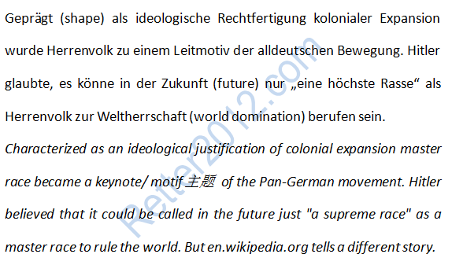

返回主页
“优等民族”考

亚洲是亚洲人的亚洲
按照Wikipedia （维基百科）的条目统计（2014-3），英语条目有4,498,000条、德语有1,710,000条、法语有1,497,000条、意大利语有1,116,000条、俄语有1,107,000条。汉语条目排名第10，有763,000条。Wikipedia是基于互联网、内容开放的多语言百科全书。
学习外语的窍门
德语名言：激励奋斗（4）
德语名言：激励奋斗（5）
德语名言：激励奋斗（6）
有时候，德语媒体与英语媒体讲的故事并不相同。这些差异正是研究的重点。比如“优等民族”一说，英语就把错误全盘算在德国头上。而德语媒体则刨根问底，认为“优等民族”（das Herrenvolk）是19世纪西欧为了让殖民地合法化而创造的一种意识形态。如此一来，以英国为首的殖民帝国就难逃干系了！这些“优等民族”在殖民地干了不少坏事呢！
计算机键盘语言设置
爱（Was du liebst, lass frei）
研究有的按部就班，有的独辟蹊径。比如自由泳，可以用Swan & Crawl方法。Swan & Crawl：25米20秒以内，普通人即可达到。
2014：奥巴马西点演讲
战舰美利坚号
足球世界杯(FIFA World Cup)
version:1.0; jobnet@188.com © retter2012.com